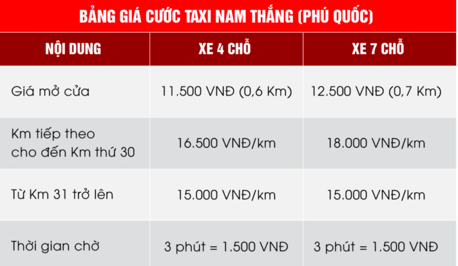
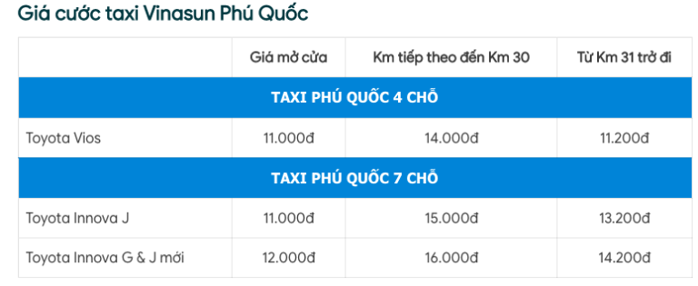
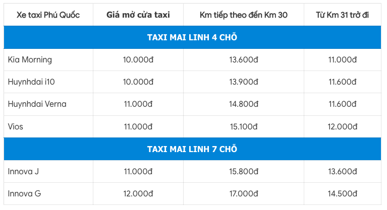
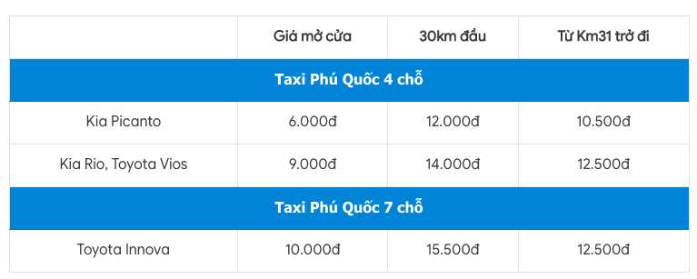
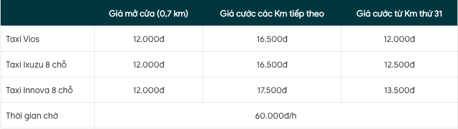
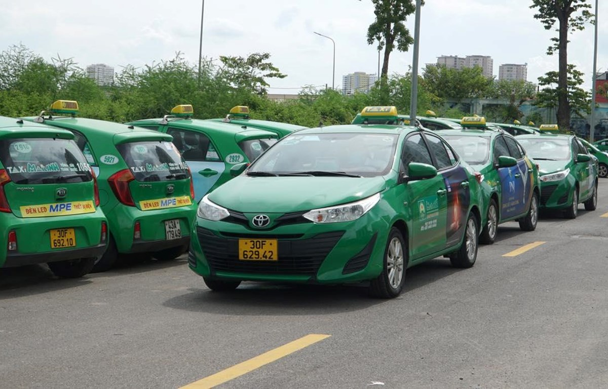

Du Lịch Phú Quốc
Bảng Giá Taxi Phú Quốc - Số Điện Thoại Taxi 2022
17/12/2022
Để tránh bị “chặt chém” khi đi xe taxi Phú Quốc, hôm nay mình sẽ tổng hợp các hãng taxi ở Phú Quốc và giá cả. Ngoài ra, mình để phía dưới một số tip khi đi taxi để an toàn và tránh bị “hớ” giá. Hãy cùng mình đọc chi tiết hơn ở phía dưới nhé.
1. Số điện thoại và giá các hãng taxi Phú Quốc
Taxi Nam Thắng Phú Quốc
Đây là hãng taxi Phú Quốc giá rẻ được nhiều người lựa chọn nhất vì giá cả phải chăng và dịch vụ tốt. Số điện thoại taxi Nam Thắng Phú Quốc: (02973) 75 75 75
Taxi Vinasun Phú Quốc
Số điện thoại taxi Vinasun Phú Quốc: 0297.38.27.27.27
Taxi Mai Linh Phú Quốc
Số taxi Mai Linh Phú Quốc: 0297.3.97.97.97
Taxi Phú Quốc
Đây là dạng taxi của địa phương, nhìn chung chất lượng dịch vụ cũng không kém gì các hãng xe taxi khác. Bạn có thể xem qua bảng giá ở phía dưới. Số điện thoại taxi Phú Quốc: 0297.3.75.75.75
Taxi Sài Gòn Phú Quốc
Hãng taxi này thường có dán cá chữ taxi Phú Quốc giá rẻ và có gam màu vàng nổi bật Số điện thoại taxi Sài Gòn Phú Quốc: 0297.37 37 37 37
Giá tham khảo khi đi taxi từ sân bay đến các điểm du lịch
Taxi từ sân bay Phú Quốc về vinpearl: Sân bay Phú Quốc cách Vinpearl khoảng từ 32km - 34km. Giá taxi 4 chỗ sẽ giao động tầm 400.000 - 500.000 VNĐ/lượt.
Taxi từ sân bay Phú Quốc về Dương Đông: Sân bay Phú Quốc cách Dương Đông tầm khoảng 14km. Giá taxi 4 chỗ sẽ tầm 180.000 - 250.000 VNĐ/lượt.
Lưu ý: Để đặt được taxi giá rẻ Phú Quốc bạn nên chọn những hãng taxi ở địa phương như taxi nam thắng hoặc xem giá cả trên mạng trước khi chọn hãng.
2. Mẹo đi taxi Phú Quốc
Một số tình huống thường gặp nên lưu ý
✅ Ở các giờ cao điểm khoảng từ 18h - 21h mỗi ngày lượng khách tăng cao. Đây chính là lúc mà các xe taxi “kiếm hời”, do lượng đặt xe quá nhiều nên nhiều du khách đã đồng ý chi gấp 2 đến 3 lần để lên được 1 chiếc taxi.
✅ Đưa tiễn sân bay và bến tàu: Không biết như thế nào chứ nhiều chú taxi sẽ chạy lòng vòng cứ như người không biết đường thay vì đi thẳng đến địa chỉ bạn yêu cầu để bạn phải tốn thêm 1 khoảng.
✅ Ngoài ra một số bác tài sẽ gợi ý cho bạn những điểm du lịch xa tận “nước ngoài” nếu bạn không biết đường hay check google.
Cách xử lý
✅ Hỏi giá taxi từ điểm đi -> điểm đến là bao nhiêu
✅ Check số km quãng đường trên map
✅ Nếu đang ở khách sạn hoặc nhà hàng gì đấy thì bạn nên nhờ nhân viên gọi giúp taxi và hỏi trước giá.
✅ Để ý đồng hồ tính tiền, số hiệu taxi và số tổng đài để có gì dễ xử lý
BÀI VIẾT GẦN ĐÂY

29/12/2022
17/12/2022

GÓP Ý